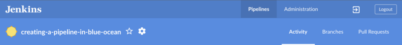
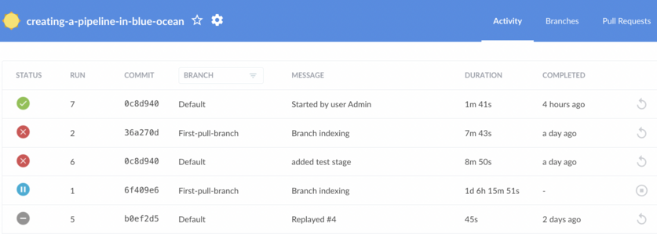
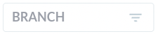
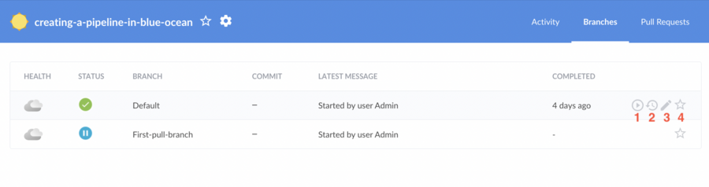

Activity View
The Blue Ocean Activity view shows all activities related to one Pipeline.
|
Blue Ocean status
Blue Ocean will not receive further functionality updates. Blue Ocean will continue to provide easy-to-use Pipeline visualization, but it will not be enhanced further. It will only receive selective updates for significant security issues or functional defects. |
Navigation Bar
The Activity view includes the standard navigation bar at the top and a local navigation bar below it.

The local navigation bar includes:
-
Pipeline Name - Selecting this displays the default Activity tab.
-
Favorites Toggle - Selecting the favorite icon ☆ to the right of the Pipeline name, adds a branch to the favorites list shown on the dashboard’s favorites list.
-
Tabs (Activity, Branches Pull Requests) - Selecting one of these navigates to the corresponding information in the Activity view.
Activity
The default tab of the Activity view shows a list of the latest completed or active runs. Each line represents the status of a run, run ID, commit information, and when the run completed.

-
Selecting a run will bring up the Pipeline run details to provide Pipeline visualization.
-
Active runs can be aborted from this list by selecting the stop icon, which is represented by a ◾ within a circle.
-
Runs that have been completed can be re-run by selecting the re-run icon ↺.
-
The list can be filtered by branch using the "Branch" drop-down in the list header. 
This view does not allow runs to be edited or marked as favorites. To perform these actions, select the Branches tab.
Branches
The Branches tab shows a list of all branches that have a completed or active run in the current Pipeline. Each line in the list corresponds to a branch in source control, displaying the overall health of the branch based on the status of the most recent run, branch name, commit information, and when the run completed.

Selecting a branch brings up the Pipeline run details for the latest completed or active run of that branch.
-
Pipelines where the latest run has been completed can be run again by selecting the run icon, represented by a in a circle.
-
Active runs can be aborted, and display a stop icon, which is represented by a ◾ within a circle.
-
-
Selecting the history icon allows you to view the run history for that branch.
-
The edit icon, represented by a , opens the Pipeline editor for that branch.
-
The favorite ☆ icon adds a branch to your favorites list on the dashboard. On the dashboard a branch listed under favorites displays a solid star ★. Deselecting the star removes the branch from the favorites list.
Pull Requests
The Pull Requests tab displays a list of all pull requests for the current Pipeline, that have a completed or active run. Each line in the list corresponds to a pull request in source control, which displays the status of the most recent run, run ID, summary, author, and when the run completed.

Blue Ocean displays pull requests and branches separately, but the lists behave similarly. Selecting a pull request in this list will bring up the Pipeline run details for the latest completed or active run of that pull request.
-
Active runs can be aborted from this list by selecting the stop icon, which is represented by a ◾ within a circle.
-
Pull requests whose latest run has been completed can be run again by selecting the run icon, represented by a in a circle.
The pull request list does not display health icons, and pull requests cannot be edited or marked as favorites.
| By default, when a pull request is closed, Jenkins removes the Pipeline from Jenkins, and runs for that pull request are no longer accessible from Jenkins. The Pipelines removed in this way will need to be cleaned up in the future. This can be changed by adjusting the configuration of the underlying multi-branch Pipeline job. |
Please submit your feedback about this page through this quick form.
Alternatively, if you don't wish to complete the quick form, you can simply indicate if you found this page helpful?
See existing feedback here.